2025 Higher Physics - Paper 2 questions
Source: Scottish Qualifications Authority (SQA) / Qualifications Scotland. This is a StemInteract HTML companion, not an official HTML edition. Selectable text is supplied alongside original page images. Use the images or original PDF for equations, powers, fractions, vector notation, tables and diagrams; text extraction cannot fully preserve mathematical layout.
Jump to a question
PDF page 1
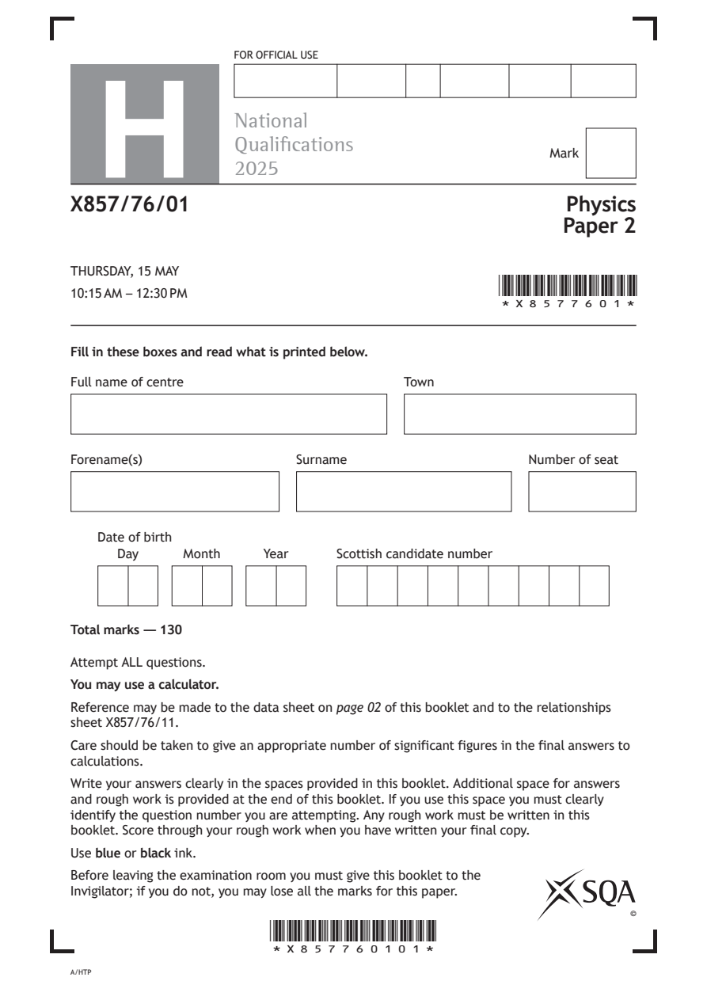
Selectable page text
FOR OFFICIAL USE
H
National
Qualications
Mark
2025
X857/76/01 Physics
Paper 2
THURSDAY, 15 MAY
10:15 AM – 12:30 PM
*X8577601*
Fill in these boxes and read what is printed below.
Full name of centre Town
Forename(s) Surname Number of seat
Date of birth
Day Month Year Scottish candidate number
Total marks — 130
Attempt ALL questions.
You may use a calculator.
Reference may be made to the data sheet on page 02 of this booklet and to the relationships
sheet X857/76/11.
Care should be taken to give an appropriate number of significant figures in the final answers to
calculations.
Write your answers clearly in the spaces provided in this booklet. Additional space for answers
and rough work is provided at the end of this booklet. If you use this space you must clearly
identify the question number you are attempting. Any rough work must be written in this
booklet. Score through your rough work when you have written your final copy.
Use blue or black ink.
Before leaving the examination room you must give this booklet to the
Invigilator; if you do not, you may lose all the marks for this paper.
©
*X857760101*
A/HTPPDF page 2
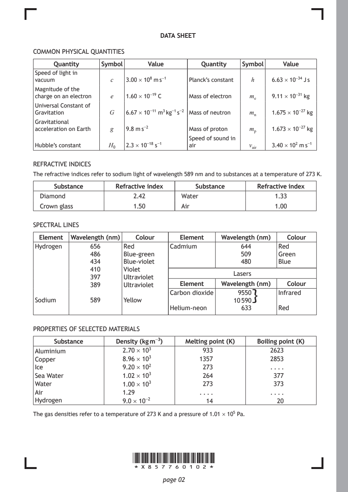
Selectable page text
DATA SHEET
COMMON PHYSICAL QUANTITIES
Quantity Symbol Value Quantity Symbol Value
Speed of light in
vacuum c 3.00 × 10⁸ m s⁻¹ Planck’s constant h 6.63 × 10⁻³⁴ J s
Magnitude of the
charge on an electron e 1.60 × 10⁻¹⁹ C Mass of electron mₑ 9.11 × 10⁻³¹ kg
Universal Constant of
Gravitation G 6.67 × 10⁻¹¹ m³ kg⁻¹ s⁻² Mass of neutron mₙ 1.675 × 10⁻²⁷ kg
Gravitational
acceleration on Earth g 9.8 m s⁻² Mass of proton mₚ 1.673 × 10⁻²⁷ kg
Speed of sound in
Hubble’s constant H₀ 2.3 × 10⁻¹⁸ s⁻¹ air vₐᵢᵣ 3.40 × 10² m s⁻¹
REFRACTIVE INDICES
The refractive indices refer to sodium light of wavelength 589 nm and to substances at a temperature of 273 K.
Substance Refractive index Substance Refractive index
Diamond 2.42 Water 1.33
Crown glass 1.50 Air 1.00
SPECTRAL LINES
Element Wavelength (nm) Colour Element Wavelength (nm) Colour
Hydrogen 656 Red Cadmium 644 Red
486 Blue-green 509 Green
434 Blue-violet 480 Blue
410 Violet
Lasers
397 Ultraviolet
389 Ultraviolet Element Wavelength (nm) Colour
Carbon dioxide 9550} Infrared
Sodium 589 Yellow 10 590
Helium-neon 633 Red
PROPERTIES OF SELECTED MATERIALS
Substance Density (kg m⁻³) Melting point (K) Boiling point (K)
Aluminium 2.70 × 10³ 933 2623
Copper 8.96 × 10³ 1357 2853
Ice 9.20 × 10² 273 . . . .
Sea Water 1.02 × 10³ 264 377
Water 1.00 × 10³ 273 373
Air 1.29 . . . . . . . .
Hydrogen 9.0 × 10⁻² 14 20
The gas densities refer to a temperature of 273 K and a pressure of 1.01 × 10⁵ Pa.
*X857760102*
page 02PDF page 3

Selectable page text
[Turn over for next question
DO NOT WRITE ON THIS PAGE
*X857760103*
page 03PDF page 4
Paper 2, Question 1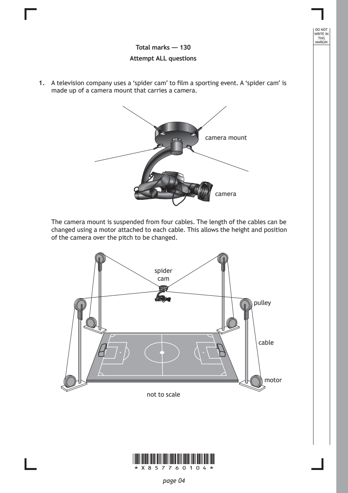
Selectable page text
DO NOT
WRITE IN
THIS
MARGIN
Total marks — 130
Attempt ALL questions
1. A television company uses a ‘spider cam’ to film a sporting event. A ‘spider cam’ is
made up of a camera mount that carries a camera.
camera mount
camera
The camera mount is suspended from four cables. The length of the cables can be
changed using a motor attached to each cable. This allows the height and position
of the camera over the pitch to be changed.
spider
cam
pulley
cable
motor
not to scale
*X857760104*
page 04PDF page 5
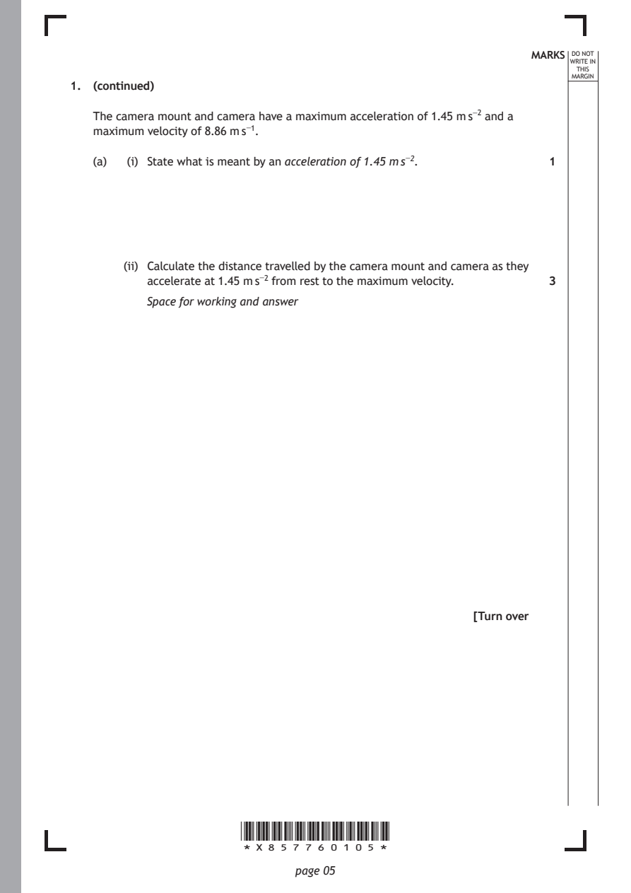
Selectable page text
MARKS _{W}^{D}_{R}^{O}_{I} _{T}^{N}OT
E IN
THIS
MARGIN
1. (continued)
The camera mount and camera have a maximum acceleration of 1.45 m s⁻² and a
maximum velocity of 8.86 m s⁻¹.
(a) (i) State what is meant by an acceleration of 1.45 m s⁻². 1
(ii) Calculate the distance travelled by the camera mount and camera as they
accelerate at 1.45 m s⁻² from rest to the maximum velocity. 3
Space for working and answer
[Turn over
*X857760105*
page 05PDF page 6
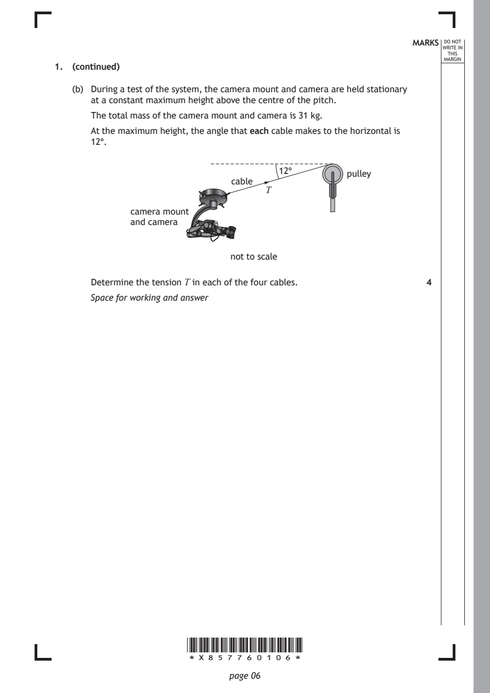
Selectable page text
MARKS _{W}^{D}_{R}^{O}_{I} _{T}^{N}OT
E IN
THIS
MARGIN
1. (continued)
(b) During a test of the system, the camera mount and camera are held stationary
at a constant maximum height above the centre of the pitch.
The total mass of the camera mount and camera is 31 kg.
At the maximum height, the angle that each cable makes to the horizontal is
12°.
12°
pulley
cable
T
camera mount
and camera
not to scale
Determine the tension T in each of the four cables. 4
Space for working and answer
*X857760106*
page 06PDF page 7

Selectable page text
[Turn over for next question
DO NOT WRITE ON THIS PAGE
*X857760107*
page 07PDF page 8
Paper 2, Question 2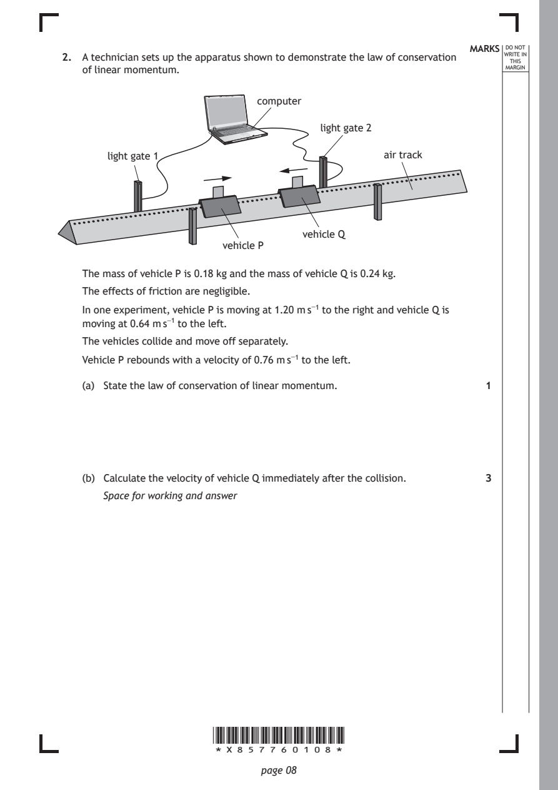
Selectable page text
MARKS _{W}^{D}_{R}^{O}_{I} _{T}^{N}OT
2. A technician sets up the apparatus shown to demonstrate the law of conservation E IN
THIS
of linear momentum. MARGIN
computer
light gate 2
light gate 1 air track
vehicle Q
vehicle P
The mass of vehicle P is 0.18 kg and the mass of vehicle Q is 0.24 kg.
The effects of friction are negligible.
In one experiment, vehicle P is moving at 1.20 m s⁻¹ to the right and vehicle Q is
moving at 0.64 m s⁻¹ to the left.
The vehicles collide and move off separately.
Vehicle P rebounds with a velocity of 0.76 m s⁻¹ to the left.
(a) State the law of conservation of linear momentum. 1
(b) Calculate the velocity of vehicle Q immediately after the collision. 3
Space for working and answer
*X857760108*
page 08PDF page 9
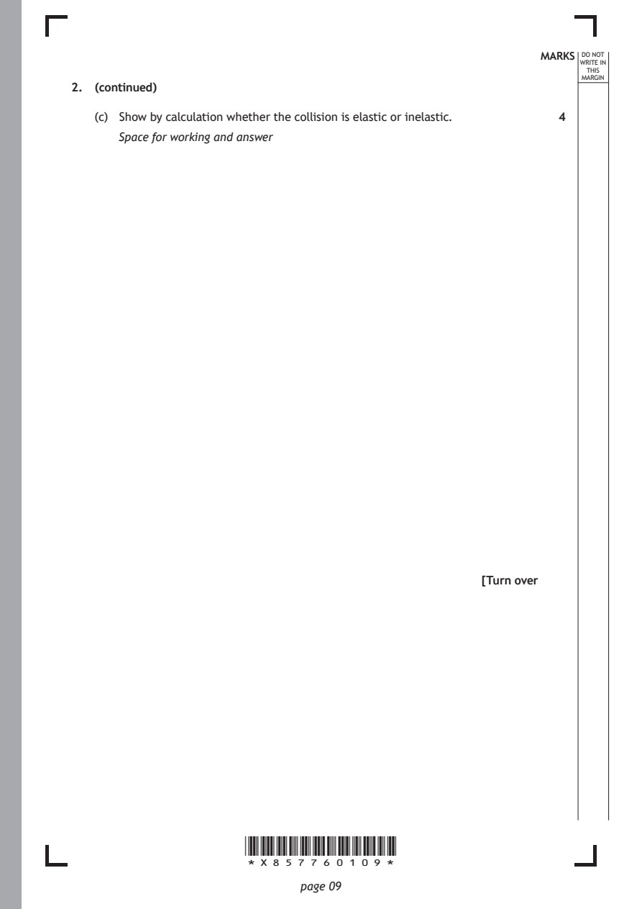
Selectable page text
MARKS _{W}^{D}_{R}^{O}_{I} _{T}^{N}OT
E IN
THIS
MARGIN
2. (continued)
(c) Show by calculation whether the collision is elastic or inelastic. 4
Space for working and answer
[Turn over
*X857760109*
page 09PDF page 10
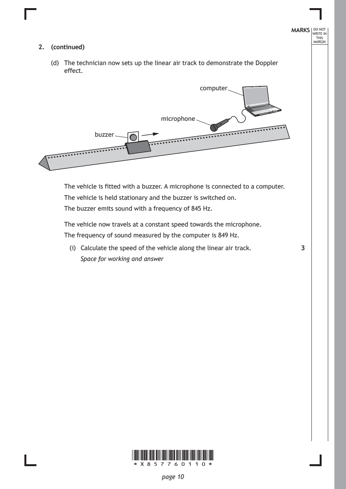
Selectable page text
MARKS _{W}^{D}_{R}^{O}_{I} _{T}^{N}OT
E IN
THIS
MARGIN
2. (continued)
(d) The technician now sets up the linear air track to demonstrate the Doppler
effect.
computer
microphone
buzzer
The vehicle is fitted with a buzzer. A microphone is connected to a computer.
The vehicle is held stationary and the buzzer is switched on.
The buzzer emits sound with a frequency of 845 Hz.
The vehicle now travels at a constant speed towards the microphone.
The frequency of sound measured by the computer is 849 Hz.
(i) Calculate the speed of the vehicle along the linear air track. 3
Space for working and answer
*X857760110*
page 10PDF page 11
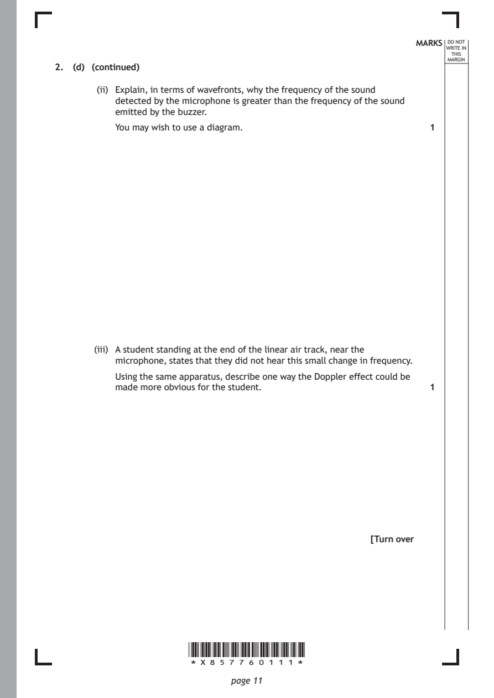
Selectable page text
MARKS _{W}^{D}_{R}^{O}_{I} _{T}^{N}OT
E IN
THIS
MARGIN
2. (d) (continued)
(ii) Explain, in terms of wavefronts, why the frequency of the sound
detected by the microphone is greater than the frequency of the sound
emitted by the buzzer.
You may wish to use a diagram. 1
(iii) A student standing at the end of the linear air track, near the
microphone, states that they did not hear this small change in frequency.
Using the same apparatus, describe one way the Doppler effect could be
made more obvious for the student. 1
[Turn over
*X857760111*
page 11PDF page 12
Paper 2, Question 3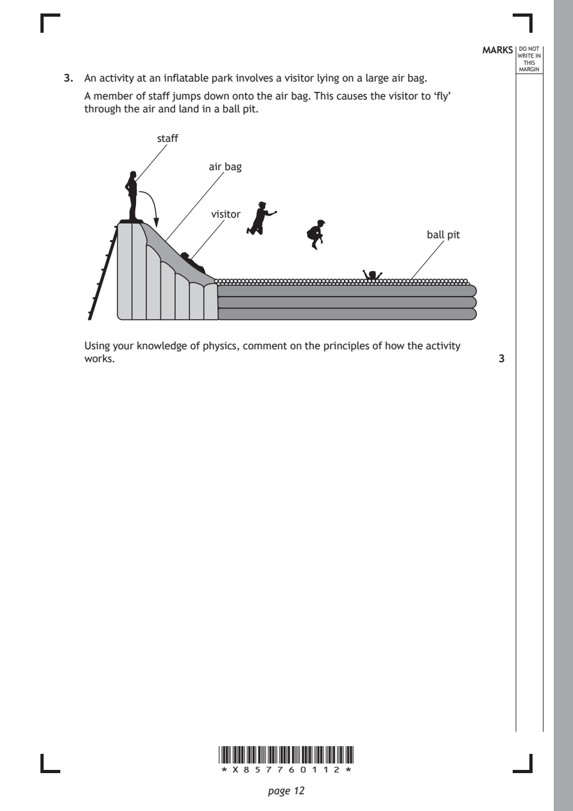
Selectable page text
MARKS _{W}^{D}_{R}^{O}_{I} _{T}^{N}OT
E IN
THIS
MARGIN
3. An activity at an inflatable park involves a visitor lying on a large air bag.
A member of staff jumps down onto the air bag. This causes the visitor to ‘fly’
through the air and land in a ball pit.
staff
air bag
visitor
ball pit
Using your knowledge of physics, comment on the principles of how the activity
works. 3
*X857760112*
page 12PDF page 13
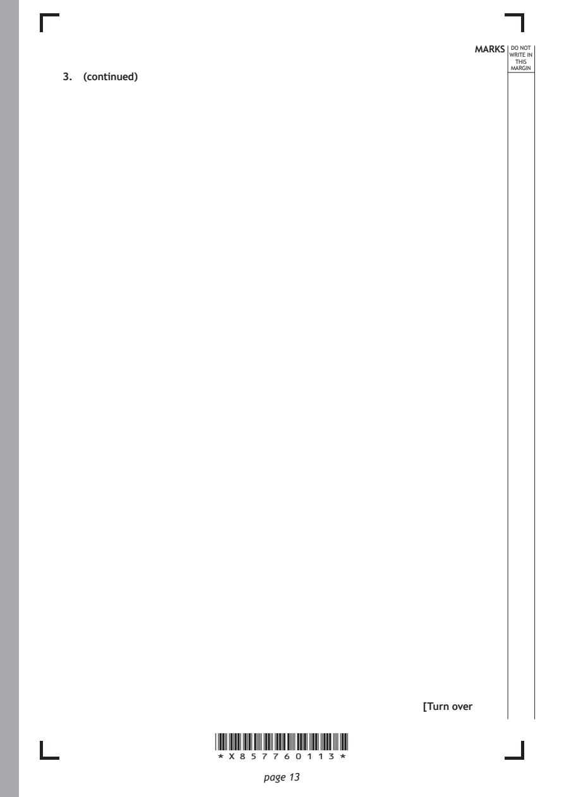
Selectable page text
MARKS _{W}^{D}_{R}^{O}_{I} _{T}^{N}OT
E IN
THIS
MARGIN
3. (continued)
[Turn over
*X857760113*
page 13PDF page 14
Paper 2, Question 4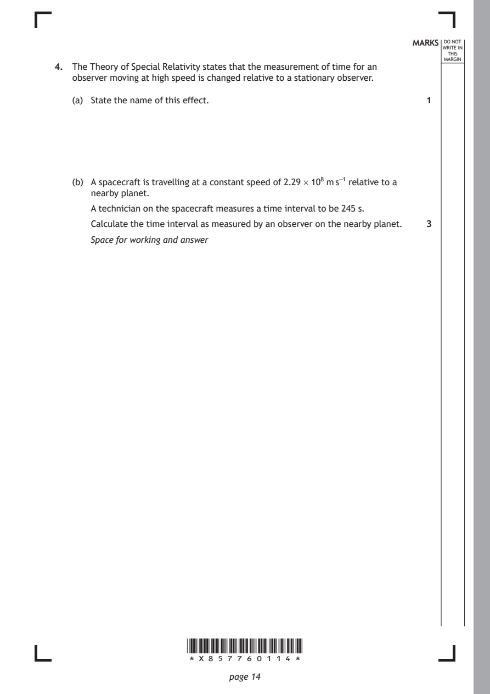
Selectable page text
MARKS _{W}^{D}_{R}^{O}_{I} _{T}^{N}OT
E IN
THIS
MARGIN
4. The Theory of Special Relativity states that the measurement of time for an
observer moving at high speed is changed relative to a stationary observer.
(a) State the name of this effect. 1
(b) A spacecraft is travelling at a constant speed of 2.29 × 10⁸ m s⁻¹ relative to a
nearby planet.
A technician on the spacecraft measures a time interval to be 245 s.
Calculate the time interval as measured by an observer on the nearby planet. 3
Space for working and answer
*X857760114*
page 14PDF page 15
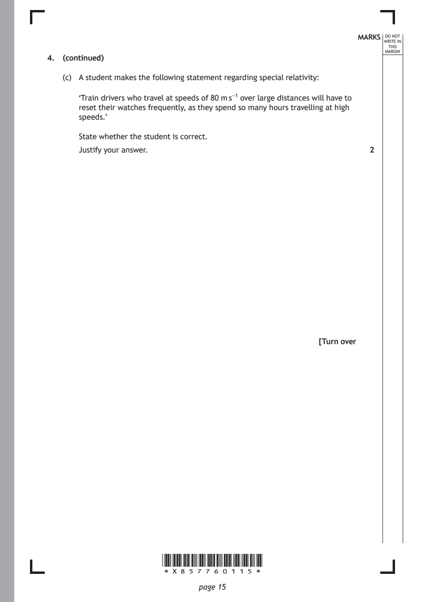
Selectable page text
MARKS _{W}^{D}_{R}^{O}_{I} _{T}^{N}OT
E IN
THIS
MARGIN
4. (continued)
(c) A student makes the following statement regarding special relativity:
‘Train drivers who travel at speeds of 80 m s⁻¹ over large distances will have to
reset their watches frequently, as they spend so many hours travelling at high
speeds.’
State whether the student is correct.
Justify your answer. 2
[Turn over
*X857760115*
page 15PDF page 16
Paper 2, Question 5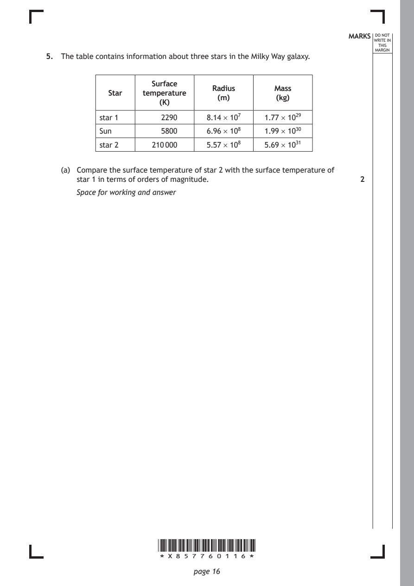
Selectable page text
MARKS _{W}^{D}_{R}^{O}_{I} _{T}^{N}OT
E IN
THIS
MARGIN
5. The table contains information about three stars in the Milky Way galaxy.
Surface
Radius Mass
Star temperature
(m) (kg)
(K)
star 1 2290 8.14 × 10⁷ 1.77 × 10²⁹
Sun 5800 6.96 × 10⁸ 1.99 × 10³⁰
star 2 210 000 5.57 × 10⁸ 5.69 × 10³¹
(a) Compare the surface temperature of star 2 with the surface temperature of
star 1 in terms of orders of magnitude. 2
Space for working and answer
*X857760116*
page 16PDF page 17
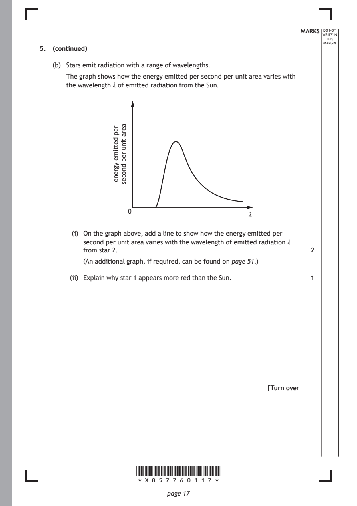
Selectable page text
MARKS _{W}^{D}_{R}^{O}_{I} _{T}^{N}OT
E IN
THIS
MARGIN
5. (continued)
(b) Stars emit radiation with a range of wavelengths.
The graph shows how the energy emitted per second per unit area varies with
the wavelength λ of emitted radiation from the Sun.
0
*X857760117*
page 17
rep
dettime
ygrene
aera
tinu
rep
dnoces
λ
(i) On the graph above, add a line to show how the energy emitted per
second per unit area varies with the wavelength of emitted radiation λ
from star 2. 2
(An additional graph, if required, can be found on page 51.)
(ii) Explain why star 1 appears more red than the Sun. 1
[Turn overPDF page 18
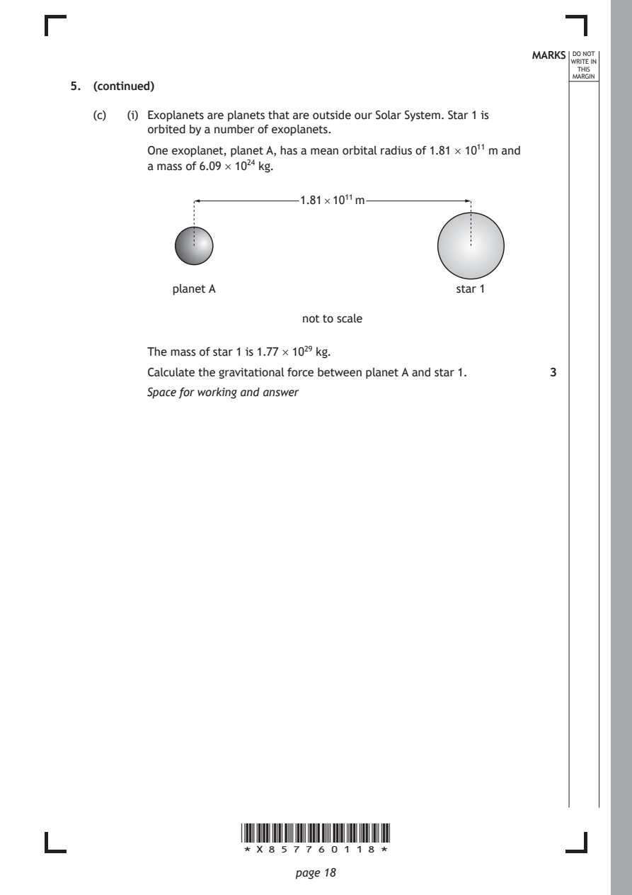
Selectable page text
MARKS _{W}^{D}_{R}^{O}_{I} _{T}^{N}OT
E IN
THIS
MARGIN
5. (continued)
(c) (i) Exoplanets are planets that are outside our Solar System. Star 1 is
orbited by a number of exoplanets.
One exoplanet, planet A, has a mean orbital radius of 1.81 × 10¹¹ m and
a mass of 6.09 × 10²⁴ kg.
1.81 × 10¹¹ m
planet A star 1
not to scale
The mass of star 1 is 1.77 × 10²⁹ kg.
Calculate the gravitational force between planet A and star 1. 3
Space for working and answer
*X857760118*
page 18PDF page 19
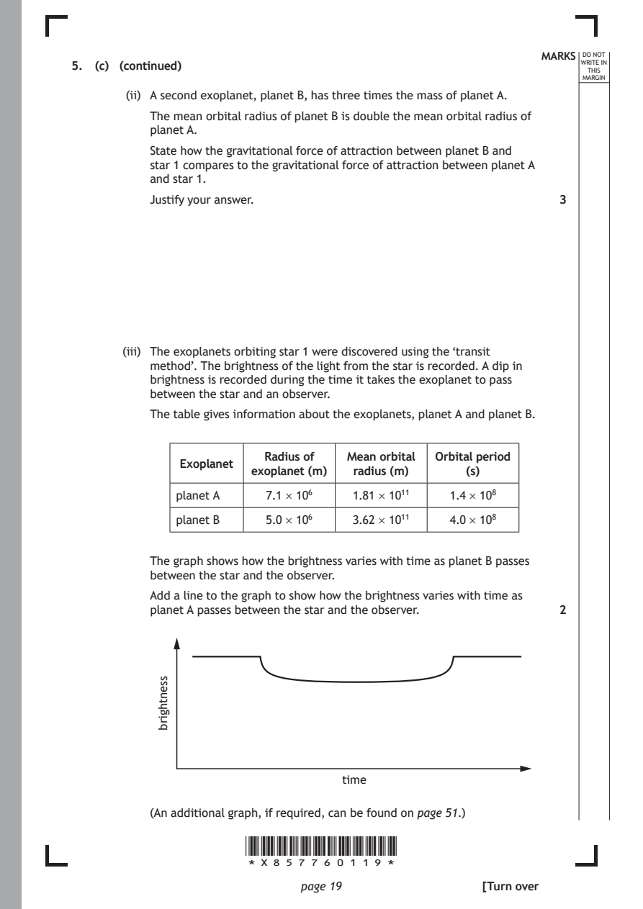
Selectable page text
MARKS _{W}^{D}_{R}^{O}_{I} _{T}^{N}OT
5. (c) (continued) E IN
THIS
MARGIN
(ii) A second exoplanet, planet B, has three times the mass of planet A.
The mean orbital radius of planet B is double the mean orbital radius of
planet A.
State how the gravitational force of attraction between planet B and
star 1 compares to the gravitational force of attraction between planet A
and star 1.
Justify your answer.
(iii) The exoplanets orbiting star 1 were discovered using the ‘transit
method’. The brightness of the light from the star is recorded. A dip in
brightness is recorded during the time it takes the exoplanet to pass
between the star and an observer.
The table gives information about the exoplanets, planet A and planet B.
Radius of Mean orbital Orbital period
Exoplanet
exoplanet (m) radius (m) (s)
planet A 7.1 × 10⁶ 1.81 × 10¹¹ 1.4 × 10⁸
planet B 5.0 × 10⁶ 3.62 × 10¹¹ 4.0 × 10⁸
The graph shows how the brightness varies with time as planet B passes
between the star and the observer.
Add a line to the graph to show how the brightness varies with time as
planet A passes between the star and the observer.
*X857760119*
page 19
ssenthgirb
3
2
time
(An additional graph, if required, can be found on page 51.)
[Turn overPDF page 20
Paper 2, Question 6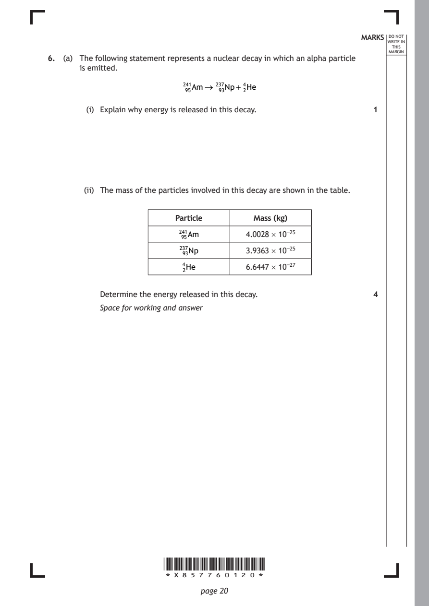
Selectable page text
MARKS _{W}^{D}_{R}^{O}_{I} _{T}^{N}OT
E IN
THIS
MARGIN
6. (a) The following statement represents a nuclear decay in which an alpha particle
is emitted.
241Am 237Νp+ ⁴₂He
95 93
(i) Explain why energy is released in this decay. 1
(ii) The mass of the particles involved in this decay are shown in the table.
Particle Mass (kg)
241Am 4.0028 × 10⁻²⁵
95
237Np 3.9363 × 10⁻²⁵
93
4He 6.6447 × 10⁻²⁷
2
Determine the energy released in this decay. 4
Space for working and answer
*X857760120*
page 20PDF page 21
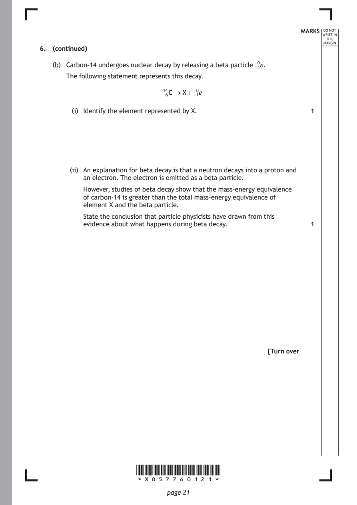
Selectable page text
MARKS _{W}^{D}_{R}^{O}_{I} _{T}^{N}OT
E IN
THIS
MARGIN
6. (continued)
(b) Carbon-14 undergoes nuclear decay by releasing a beta particle ₋⁰₁e.
The following statement represents this decay.
14CX+ ₋⁰₁e
6
(i) Identify the element represented by X. 1
(ii) An explanation for beta decay is that a neutron decays into a proton and
an electron. The electron is emitted as a beta particle.
However, studies of beta decay show that the mass-energy equivalence
of carbon-14 is greater than the total mass-energy equivalence of
element X and the beta particle.
State the conclusion that particle physicists have drawn from this
evidence about what happens during beta decay. 1
[Turn over
*X857760121*
page 21PDF page 22
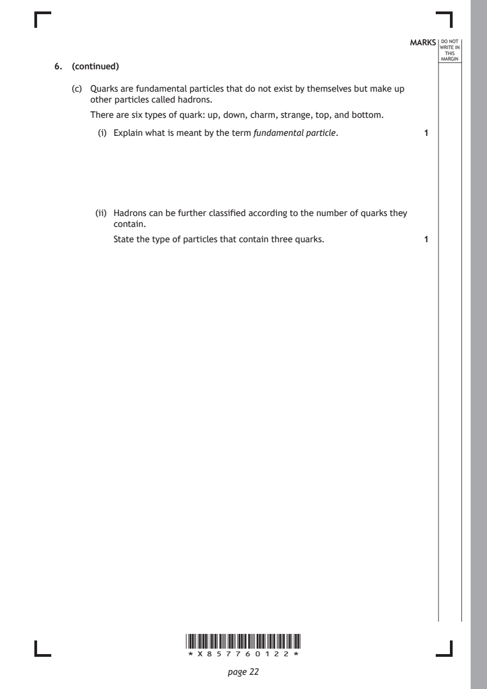
Selectable page text
MARKS _{W}^{D}_{R}^{O}_{I} _{T}^{N}OT
E IN
THIS
MARGIN
6. (continued)
(c) Quarks are fundamental particles that do not exist by themselves but make up
other particles called hadrons.
There are six types of quark: up, down, charm, strange, top, and bottom.
(i) Explain what is meant by the term fundamental particle. 1
(ii) Hadrons can be further classified according to the number of quarks they
contain.
State the type of particles that contain three quarks. 1
*X857760122*
page 22PDF page 23
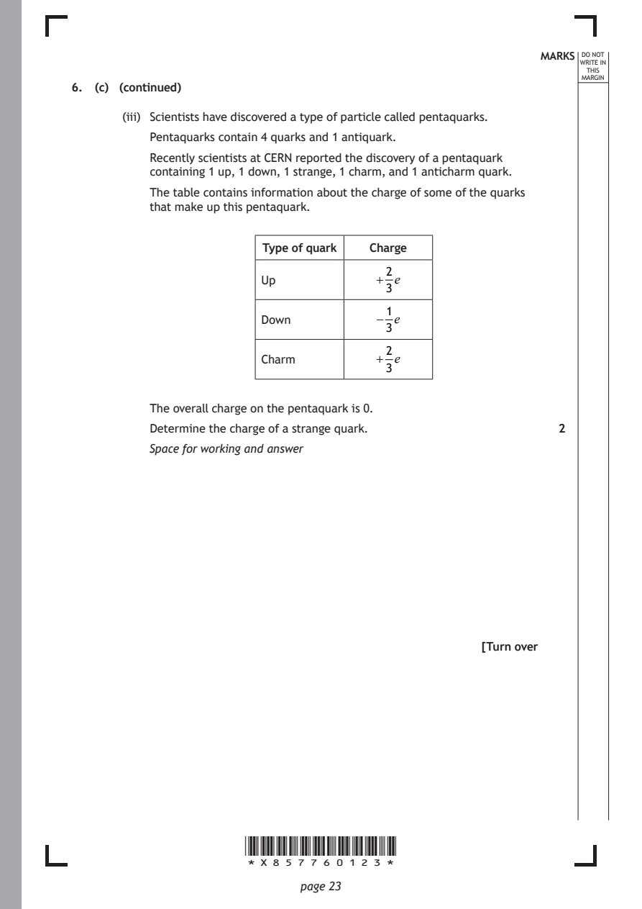
Selectable page text
MARKS _{W}^{D}_{R}^{O}_{I} _{T}^{N}OT
E IN
THIS
MARGIN
6. (c) (continued)
(iii) Scientists have discovered a type of particle called pentaquarks.
Pentaquarks contain 4 quarks and 1 antiquark.
Recently scientists at CERN reported the discovery of a pentaquark
containing 1 up, 1 down, 1 strange, 1 charm, and 1 anticharm quark.
The table contains information about the charge of some of the quarks
that make up this pentaquark.
Type of quark Charge
2
Up + e
3
1
Down − e
3
2
Charm + e
3
The overall charge on the pentaquark is 0.
Determine the charge of a strange quark. 2
Space for working and answer
[Turn over
*X857760123*
page 23PDF page 24
Paper 2, Question 7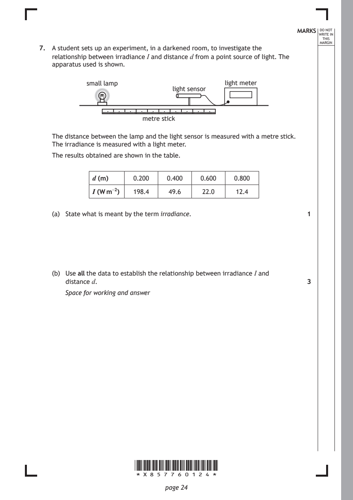
Selectable page text
MARKS _{W}^{D}_{R}^{O}_{I} _{T}^{N}OT
E IN
THIS
MARGIN
7. A student sets up an experiment, in a darkened room, to investigate the
relationship between irradiance I and distance d from a point source of light. The
apparatus used is shown.
small lamp light meter
light sensor
metre stick
The distance between the lamp and the light sensor is measured with a metre stick.
The irradiance is measured with a light meter.
The results obtained are shown in the table.
d (m) 0.200 0.400 0.600 0.800
I (W m⁻²) 198.4 49.6 22.0 12.4
(a) State what is meant by the term irradiance. 1
(b) Use all the data to establish the relationship between irradiance I and
distance d. 3
Space for working and answer
*X857760124*
page 24PDF page 25
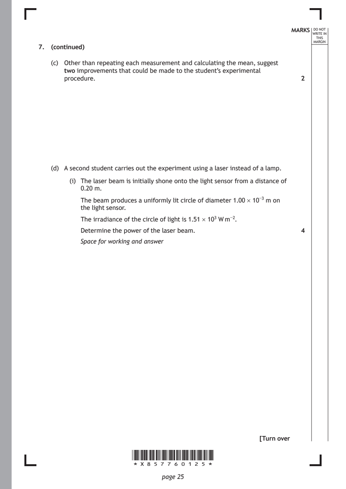
Selectable page text
MARKS _{W}^{D}_{R}^{O}_{I} _{T}^{N}OT
E IN
THIS
MARGIN
7. (continued)
(c) Other than repeating each measurement and calculating the mean, suggest
two improvements that could be made to the student’s experimental
procedure. 2
(d) A second student carries out the experiment using a laser instead of a lamp.
(i) The laser beam is initially shone onto the light sensor from a distance of
0.20 m.
The beam produces a uniformly lit circle of diameter 1.00 × 10⁻³ m on
the light sensor.
The irradiance of the circle of light is 1.51 × 10³ W m⁻².
Determine the power of the laser beam. 4
Space for working and answer
[Turn over
*X857760125*
page 25PDF page 26
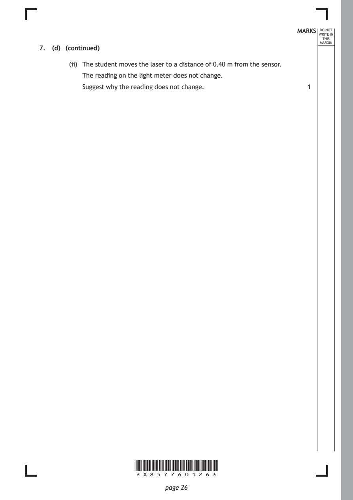
Selectable page text
MARKS _{W}^{D}_{R}^{O}_{I} _{T}^{N}OT
E IN
THIS
MARGIN
7. (d) (continued)
(ii) The student moves the laser to a distance of 0.40 m from the sensor.
The reading on the light meter does not change.
Suggest why the reading does not change. 1
*X857760126*
page 26PDF page 27

Selectable page text
[Turn over for next question
DO NOT WRITE ON THIS PAGE
*X857760127*
page 27PDF page 28
Paper 2, Question 8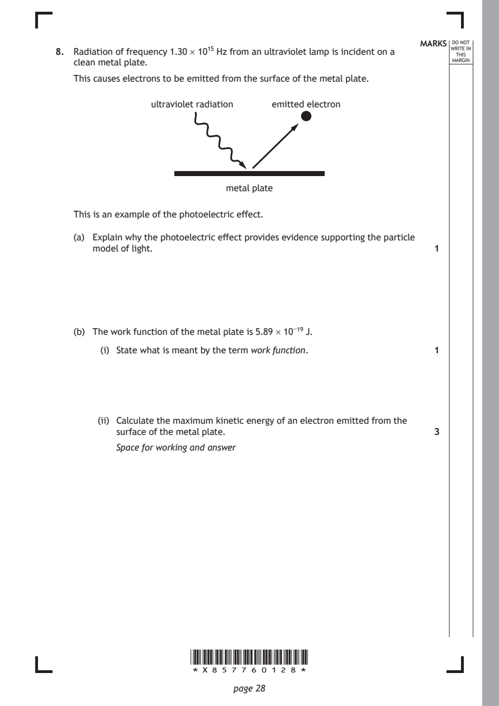
Selectable page text
MARKS _{W}^{D}_{R}^{O}_{I} _{T}^{N}OT
8. Radiation of frequency 1.30 × 10¹⁵ Hz from an ultraviolet lamp is incident on a E IN
THIS
clean metal plate. MARGIN
This causes electrons to be emitted from the surface of the metal plate.
ultraviolet radiation emitted electron
metal plate
This is an example of the photoelectric effect.
(a) Explain why the photoelectric effect provides evidence supporting the particle
model of light. 1
(b) The work function of the metal plate is 5.89 × 10⁻¹⁹ J.
(i) State what is meant by the term work function. 1
(ii) Calculate the maximum kinetic energy of an electron emitted from the
surface of the metal plate. 3
Space for working and answer
*X857760128*
page 28PDF page 29
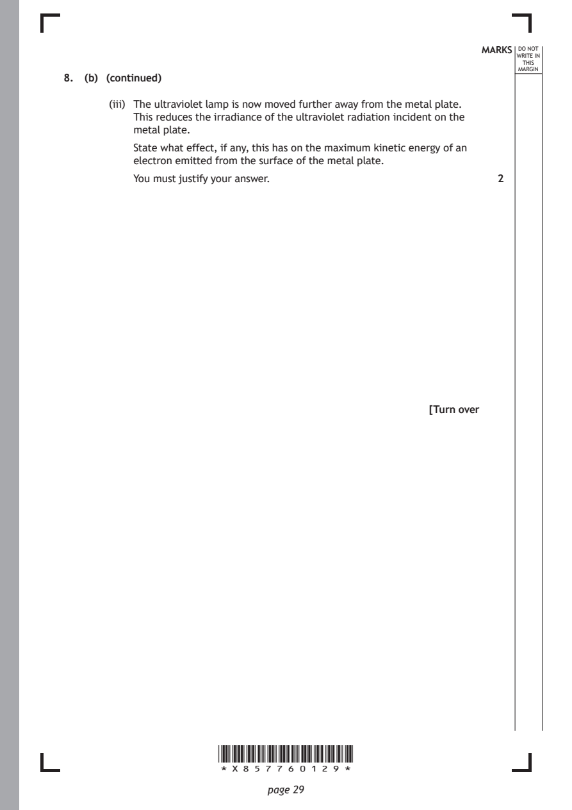
Selectable page text
MARKS _{W}^{D}_{R}^{O}_{I} _{T}^{N}OT
E IN
THIS
MARGIN
8. (b) (continued)
(iii) The ultraviolet lamp is now moved further away from the metal plate.
This reduces the irradiance of the ultraviolet radiation incident on the
metal plate.
State what effect, if any, this has on the maximum kinetic energy of an
electron emitted from the surface of the metal plate.
You must justify your answer. 2
[Turn over
*X857760129*
page 29PDF page 30
Paper 2, Question 9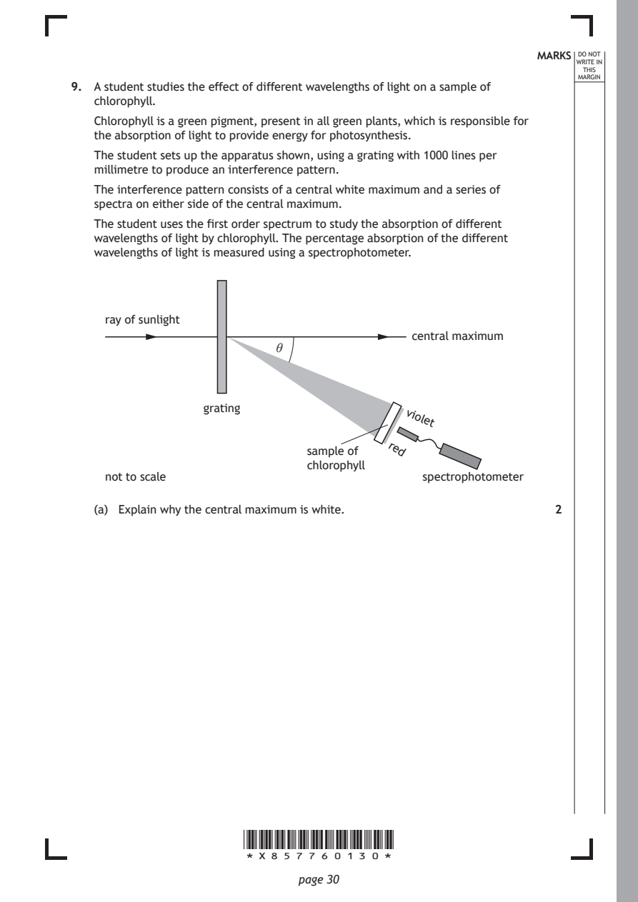
Selectable page text
MARKS _{W}^{D}_{R}^{O}_{I} _{T}^{N}OT
E IN
THIS
MARGIN
9. A student studies the effect of different wavelengths of light on a sample of
chlorophyll.
Chlorophyll is a green pigment, present in all green plants, which is responsible for
the absorption of light to provide energy for photosynthesis.
The student sets up the apparatus shown, using a grating with 1000 lines per
millimetre to produce an interference pattern.
The interference pattern consists of a central white maximum and a series of
spectra on either side of the central maximum.
The student uses the first order spectrum to study the absorption of different
wavelengths of light by chlorophyll. The percentage absorption of the different
wavelengths of light is measured using a spectrophotometer.
ray of sunlight
central maximum
θ
grating
violet
re
sample of d
chlorophyll
not to scale spectrophotometer
(a) Explain why the central maximum is white. 2
*X857760130*
page 30PDF page 31
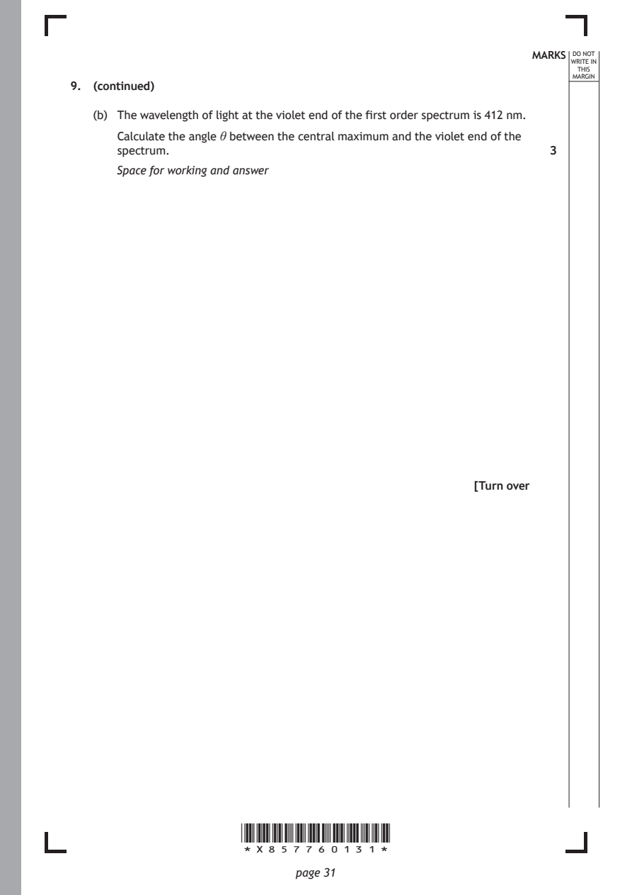
Selectable page text
MARKS _{W}^{D}_{R}^{O}_{I} _{T}^{N}OT
E IN
THIS
MARGIN
9. (continued)
(b) The wavelength of light at the violet end of the first order spectrum is 412 nm.
Calculate the angle θ between the central maximum and the violet end of the
spectrum. 3
Space for working and answer
[Turn over
*X857760131*
page 31PDF page 32
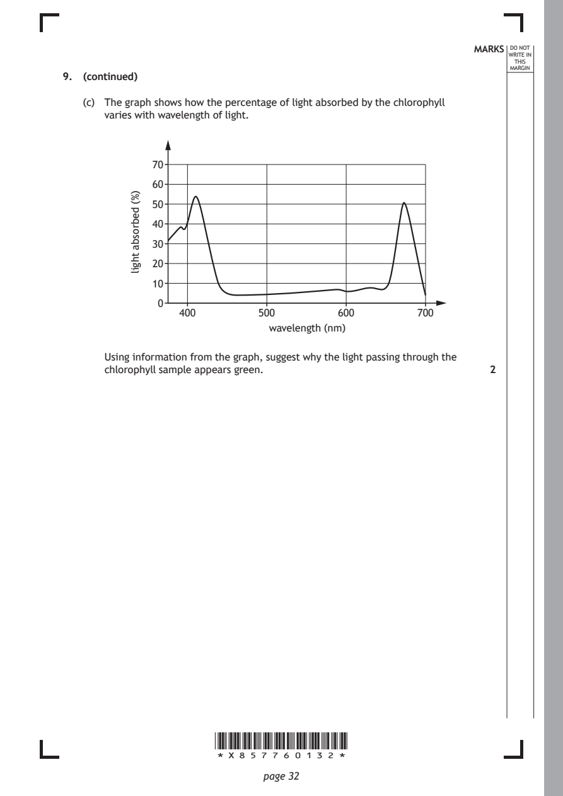
Selectable page text
MARKS _{W}^{D}_{R}^{O}_{I} _{T}^{N}OT
E IN
THIS
MARGIN
9. (continued)
(c) The graph shows how the percentage of light absorbed by the chlorophyll
varies with wavelength of light.
70
60
50
40
30
20
10
0
*X857760132*
page 32
)%(
debrosba
thgil
400 500 600 700
wavelength (nm)
Using information from the graph, suggest why the light passing through the
chlorophyll sample appears green. 2PDF page 33
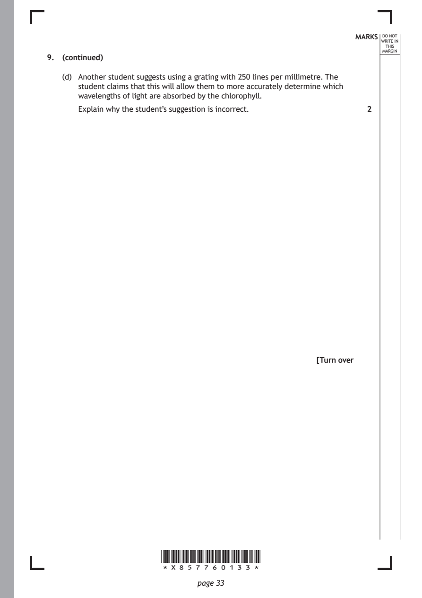
Selectable page text
MARKS _{W}^{D}_{R}^{O}_{I} _{T}^{N}OT
E IN
THIS
MARGIN
9. (continued)
(d) Another student suggests using a grating with 250 lines per millimetre. The
student claims that this will allow them to more accurately determine which
wavelengths of light are absorbed by the chlorophyll.
Explain why the student’s suggestion is incorrect. 2
[Turn over
*X857760133*
page 33PDF page 34
Paper 2, Question 10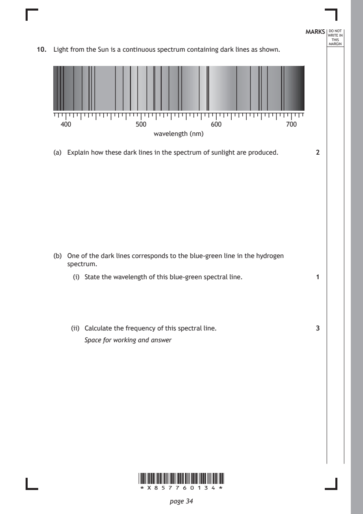
Selectable page text
MARKS _{W}^{D}_{R}^{O}_{I} _{T}^{N}OT
E IN
THIS
MARGIN
10. Light from the Sun is a continuous spectrum containing dark lines as shown.
400 500 600 700
wavelength (nm)
(a) Explain how these dark lines in the spectrum of sunlight are produced. 2
(b) One of the dark lines corresponds to the blue-green line in the hydrogen
spectrum.
(i) State the wavelength of this blue-green spectral line. 1
(ii) Calculate the frequency of this spectral line. 3
Space for working and answer
*X857760134*
page 34PDF page 35
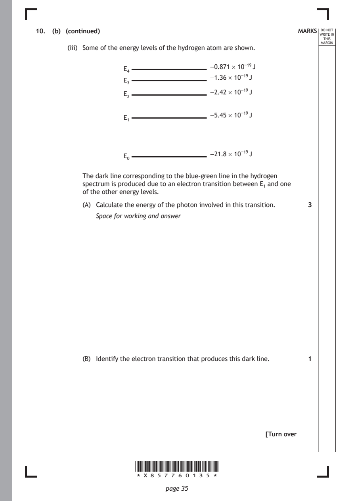
Selectable page text
10. (b) (continued) MARKS _{W}^{D}_{R}^{O}_{I} _{T}^{N}OT
E IN
THIS
MARGIN
(iii) Some of the energy levels of the hydrogen atom are shown.
E₄ −0.871 × 10⁻¹⁹ J
−1.36 × 10⁻¹⁹ J
E₃
−2.42 × 10⁻¹⁹ J
E₂
−5.45 × 10⁻¹⁹ J
E₁
−21.8 × 10⁻¹⁹ J
E₀
The dark line corresponding to the blue-green line in the hydrogen
spectrum is produced due to an electron transition between E₁ and one
of the other energy levels.
(A) Calculate the energy of the photon involved in this transition. 3
Space for working and answer
(B) Identify the electron transition that produces this dark line. 1
[Turn over
*X857760135*
page 35PDF page 36
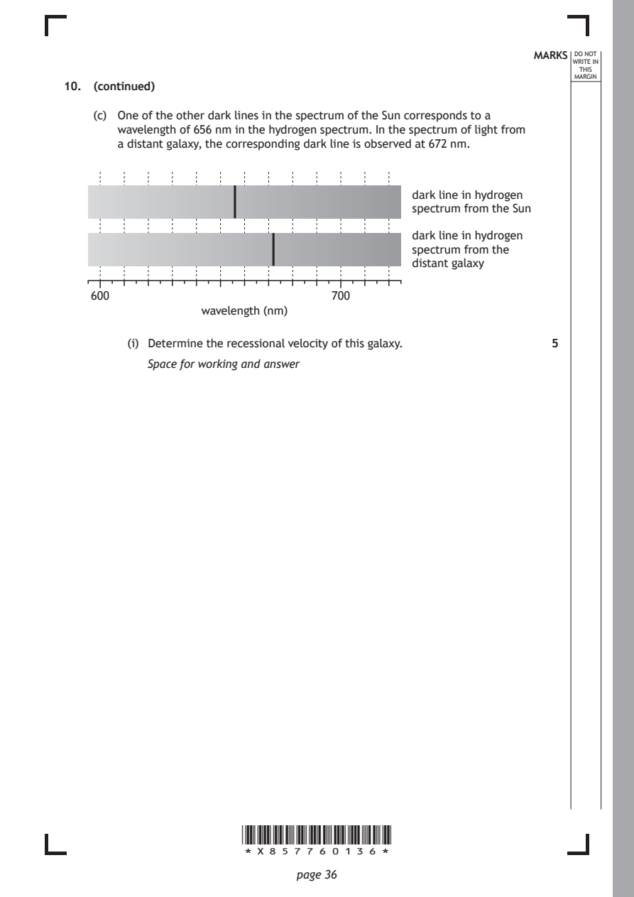
Selectable page text
MARKS _{W}^{D}_{R}^{O}_{I} _{T}^{N}OT
E IN
THIS
MARGIN
10. (continued)
(c) One of the other dark lines in the spectrum of the Sun corresponds to a
wavelength of 656 nm in the hydrogen spectrum. In the spectrum of light from
a distant galaxy, the corresponding dark line is observed at 672 nm.
dark line in hydrogen
spectrum from the Sun
dark line in hydrogen
spectrum from the
distant galaxy
600 700
wavelength (nm)
(i) Determine the recessional velocity of this galaxy. 5
Space for working and answer
*X857760136*
page 36PDF page 37
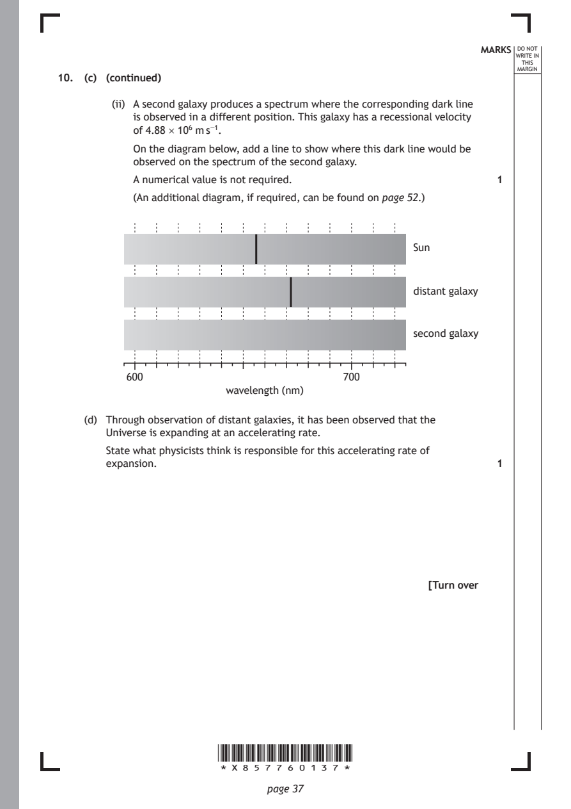
Selectable page text
MARKS _{W}^{D}_{R}^{O}_{I} _{T}^{N}OT
E IN
THIS
MARGIN
10. (c) (continued)
(ii) A second galaxy produces a spectrum where the corresponding dark line
is observed in a different position. This galaxy has a recessional velocity
of 4.88 × 10⁶ m s⁻¹.
On the diagram below, add a line to show where this dark line would be
observed on the spectrum of the second galaxy.
A numerical value is not required. 1
(An additional diagram, if required, can be found on page 52.)
Sun
distant galaxy
second galaxy
600 700
wavelength (nm)
(d) Through observation of distant galaxies, it has been observed that the
Universe is expanding at an accelerating rate.
State what physicists think is responsible for this accelerating rate of
expansion. 1
[Turn over
*X857760137*
page 37PDF page 38
Paper 2, Question 11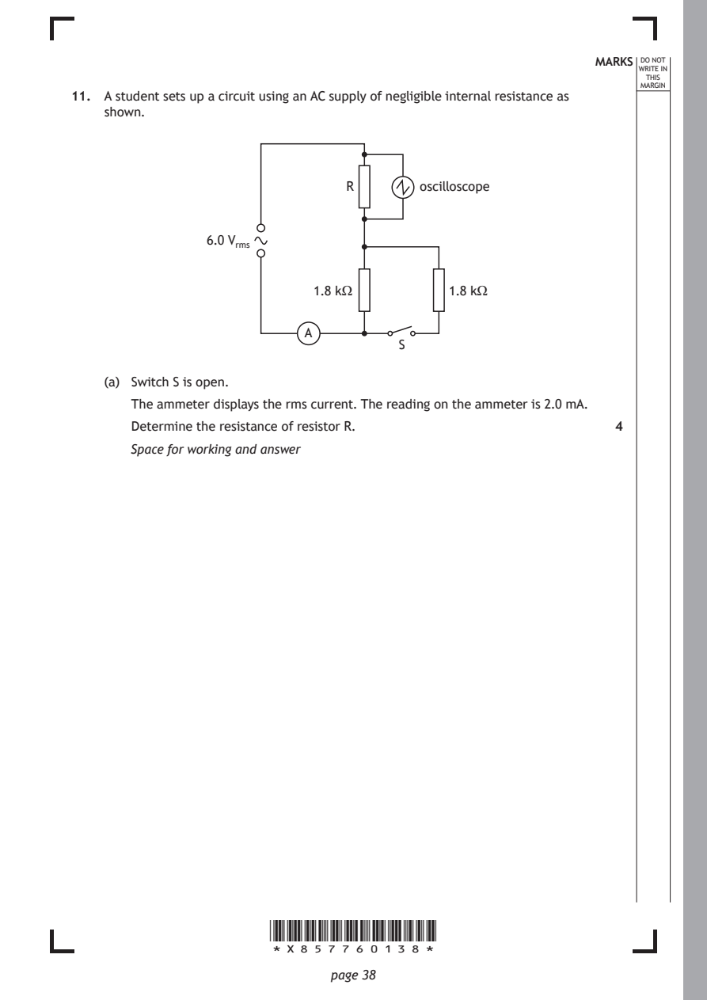
Selectable page text
MARKS _{W}^{D}_{R}^{O}_{I} _{T}^{N}OT
E IN
THIS
MARGIN
11. A student sets up a circuit using an AC supply of negligible internal resistance as
shown.
R oscilloscope
6.0 Vᵣₘₛ
1.8 kΩ 1.8 kΩ
A
S
(a) Switch S is open.
The ammeter displays the rms current. The reading on the ammeter is 2.0 mA.
Determine the resistance of resistor R. 4
Space for working and answer
*X857760138*
page 38PDF page 39
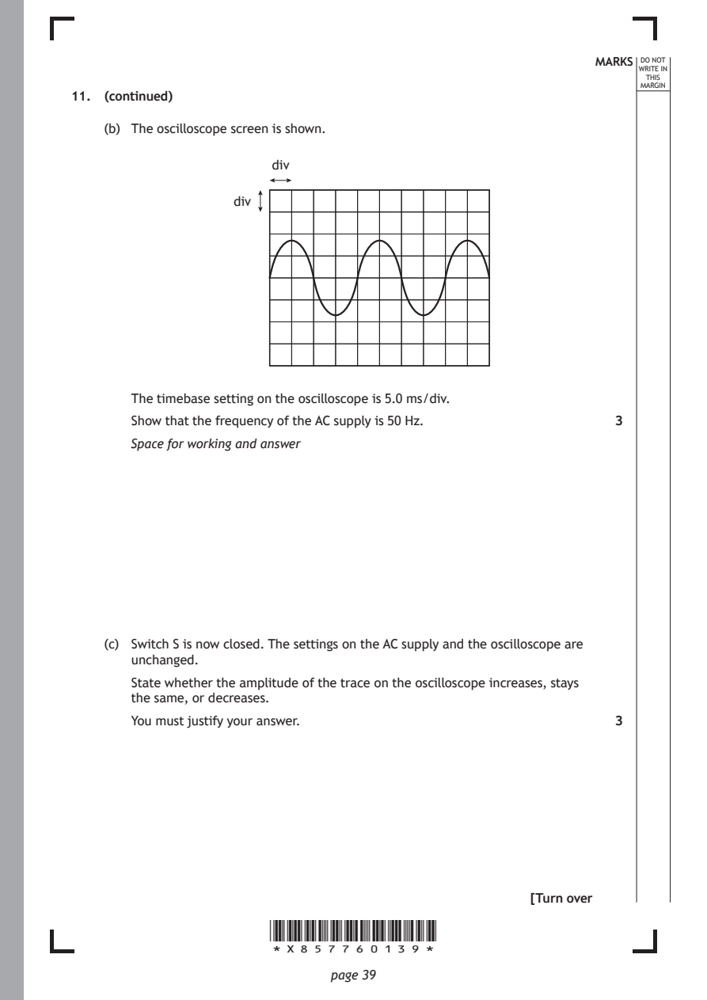
Selectable page text
MARKS _{W}^{D}_{R}^{O}_{I} _{T}^{N}OT
E IN
THIS
MARGIN
11. (continued)
(b) The oscilloscope screen is shown.
div
div
The timebase setting on the oscilloscope is 5.0 ms/div.
Show that the frequency of the AC supply is 50 Hz. 3
Space for working and answer
(c) Switch S is now closed. The settings on the AC supply and the oscilloscope are
unchanged.
State whether the amplitude of the trace on the oscilloscope increases, stays
the same, or decreases.
You must justify your answer. 3
[Turn over
*X857760139*
page 39PDF page 40
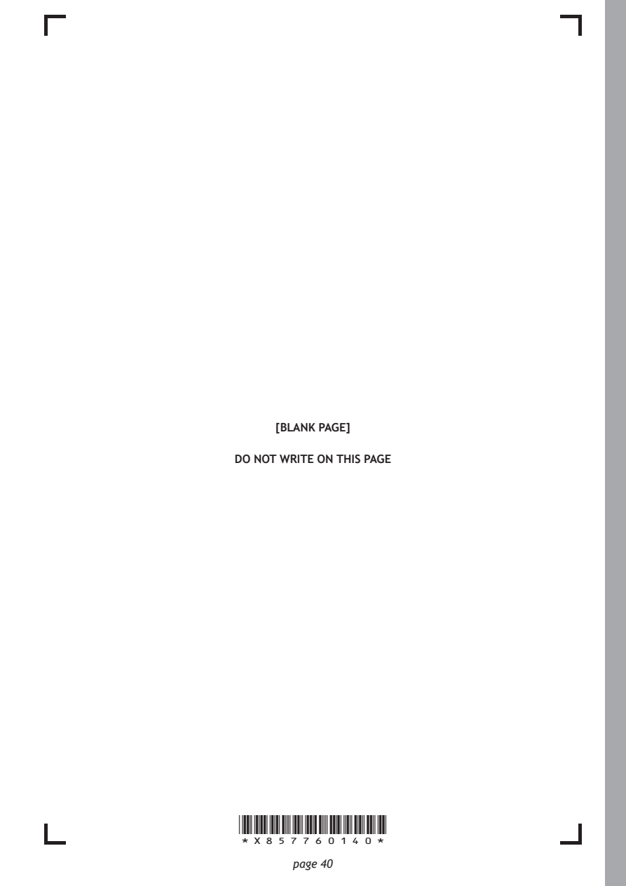
Selectable page text
[BLANK PAGE]
DO NOT WRITE ON THIS PAGE
*X857760140*
page 40PDF page 41
Paper 2, Question 12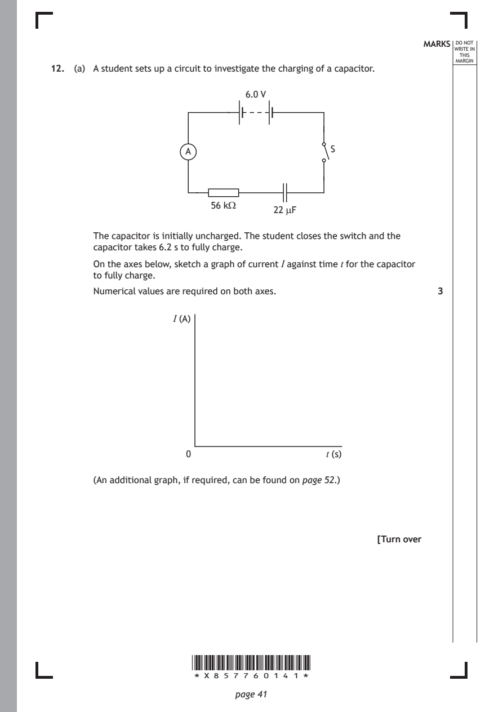
Selectable page text
MARKS _{W}^{D}_{R}^{O}_{I} _{T}^{N}OT
E IN
THIS
MARGIN
12. (a) A student sets up a circuit to investigate the charging of a capacitor.
6.0 V
S
A
56 kΩ
22 µF
The capacitor is initially uncharged. The student closes the switch and the
capacitor takes 6.2 s to fully charge.
On the axes below, sketch a graph of current I against time t for the capacitor
to fully charge.
Numerical values are required on both axes. 3
I (A)
0 t (s)
(An additional graph, if required, can be found on page 52.)
[Turn over
*X857760141*
page 41PDF page 42
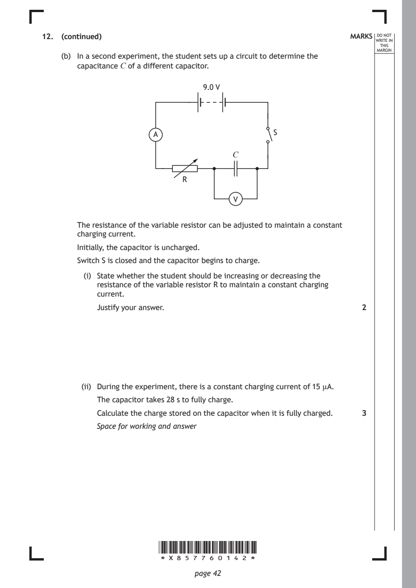
Selectable page text
12. (continued) MARKS _{W}^{D}_{R}^{O}_{I} _{T}^{N}OT
E IN
THIS
MARGIN
(b) In a second experiment, the student sets up a circuit to determine the
capacitance C of a different capacitor.
9.0 V
S
A
C
R
V
The resistance of the variable resistor can be adjusted to maintain a constant
charging current.
Initially, the capacitor is uncharged.
Switch S is closed and the capacitor begins to charge.
(i) State whether the student should be increasing or decreasing the
resistance of the variable resistor R to maintain a constant charging
current.
Justify your answer. 2
(ii) During the experiment, there is a constant charging current of 15 µA.
The capacitor takes 28 s to fully charge.
Calculate the charge stored on the capacitor when it is fully charged. 3
Space for working and answer
*X857760142*
page 42PDF page 43
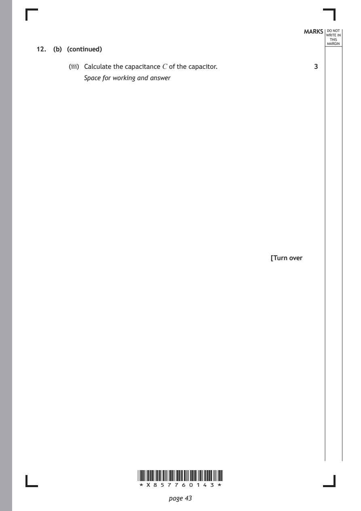
Selectable page text
MARKS _{W}^{D}_{R}^{O}_{I} _{T}^{N}OT
E IN
THIS
MARGIN
12. (b) (continued)
(iii) Calculate the capacitance C of the capacitor. 3
Space for working and answer
[Turn over
*X857760143*
page 43PDF page 44
Paper 2, Question 13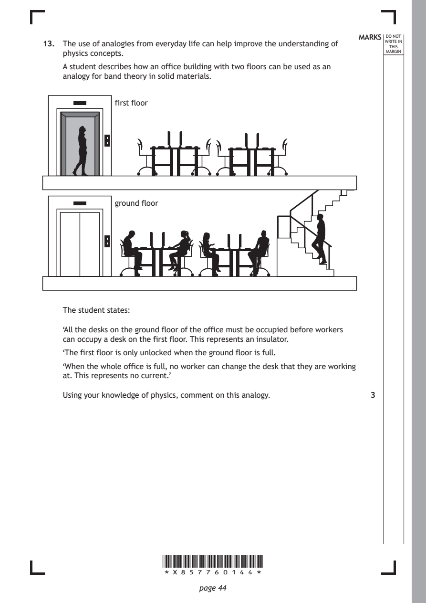
Selectable page text
MARKS _{W}^{D}_{R}^{O}_{I} _{T}^{N}OT
13. The use of analogies from everyday life can help improve the understanding of E IN
THIS
physics concepts. MARGIN
A student describes how an office building with two floors can be used as an
analogy for band theory in solid materials.
first floor
ground floor
The student states:
‘All the desks on the ground floor of the office must be occupied before workers
can occupy a desk on the first floor. This represents an insulator.
‘The first floor is only unlocked when the ground floor is full.
‘When the whole office is full, no worker can change the desk that they are working
at. This represents no current.’
Using your knowledge of physics, comment on this analogy. 3
*X857760144*
page 44PDF page 45
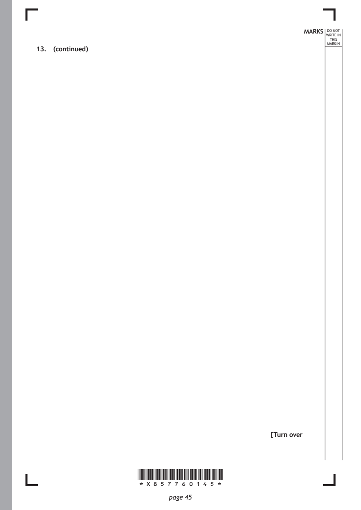
Selectable page text
MARKS _{W}^{D}_{R}^{O}_{I} _{T}^{N}OT
E IN
THIS
MARGIN
13. (continued)
[Turn over
*X857760145*
page 45PDF page 46
Paper 2, Question 14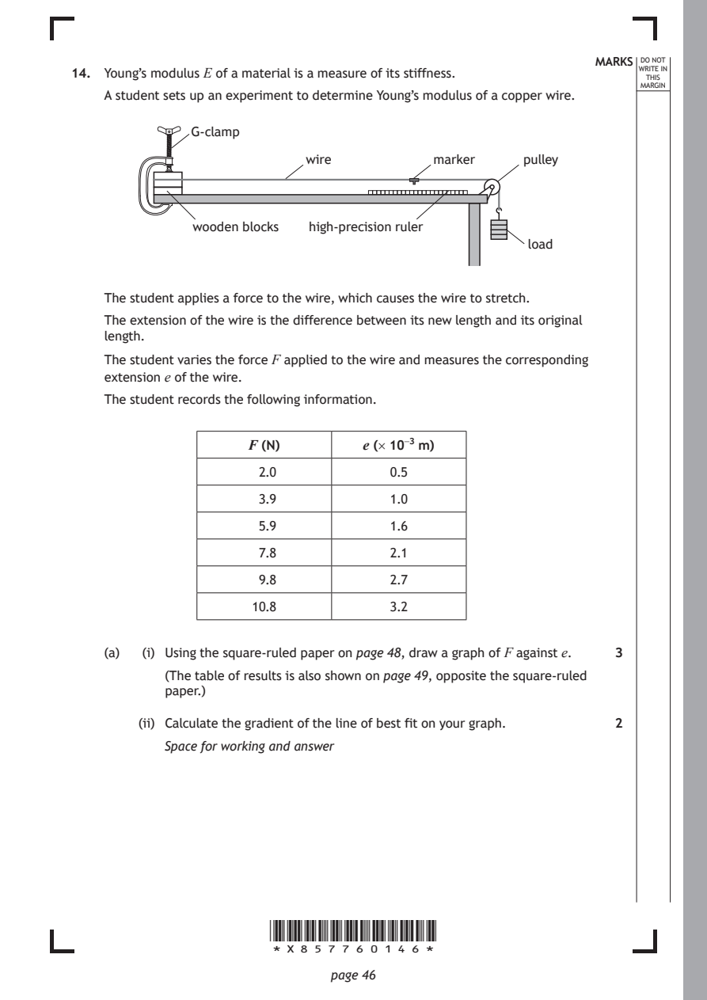
Selectable page text
MARKS _{W}^{D}_{R}^{O}_{I} _{T}^{N}OT
14. Young’s modulus E of a material is a measure of its stiffness. E IN
THIS
MARGIN
A student sets up an experiment to determine Young’s modulus of a copper wire.
G-clamp
wire marker pulley
wooden blocks high-precision ruler
load
The student applies a force to the wire, which causes the wire to stretch.
The extension of the wire is the difference between its new length and its original
length.
The student varies the force F applied to the wire and measures the corresponding
extension e of the wire.
The student records the following information.
F (N) e (× 10⁻³ m)
2.0 0.5
3.9 1.0
5.9 1.6
7.8 2.1
9.8 2.7
10.8 3.2
(a) (i) Using the square-ruled paper on page 48, draw a graph of F against e. 3
(The table of results is also shown on page 49, opposite the square-ruled
paper.)
(ii) Calculate the gradient of the line of best fit on your graph. 2
Space for working and answer
*X857760146*
page 46PDF page 47
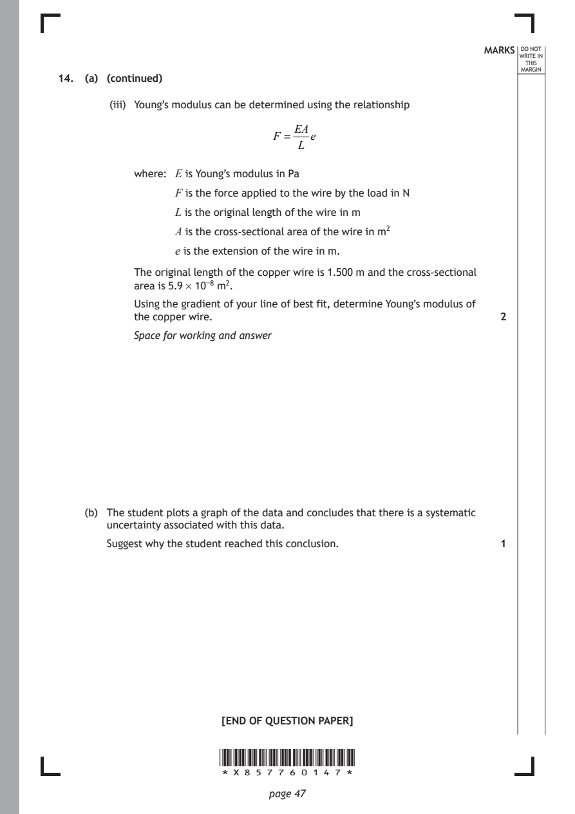
Selectable page text
MARKS _{W}^{D}_{R}^{O}_{I} _{T}^{N}OT
E IN
THIS
MARGIN
14. (a) (continued)
(iii) Young’s modulus can be determined using the relationship
EA
F = e
L
where: E is Young’s modulus in Pa
F is the force applied to the wire by the load in N
L is the original length of the wire in m
A is the cross-sectional area of the wire in m²
e is the extension of the wire in m.
The original length of the copper wire is 1.500 m and the cross-sectional
area is 5.9 × 10⁻⁸ m².
Using the gradient of your line of best fit, determine Young’s modulus of
the copper wire. 2
Space for working and answer
(b) The student plots a graph of the data and concludes that there is a systematic
uncertainty associated with this data.
Suggest why the student reached this conclusion. 1
[END OF QUESTION PAPER]
*X857760147*
page 47PDF page 48
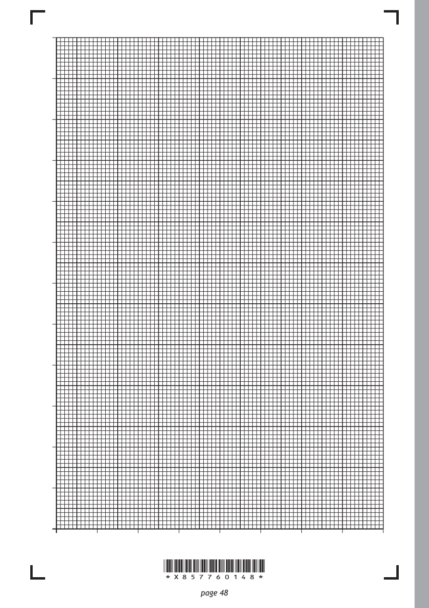
Selectable page text
*X857760148*
page 48PDF page 49
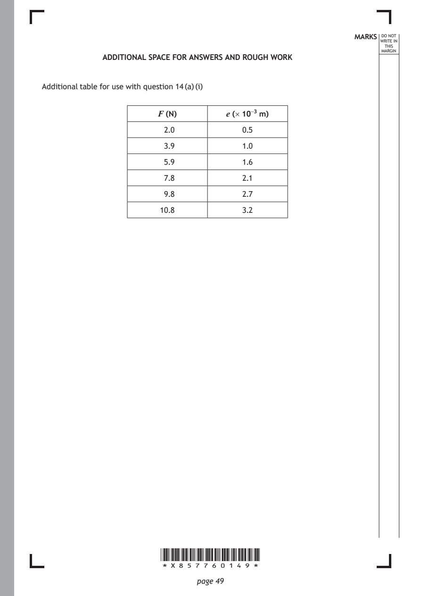
Selectable page text
MARKS _{W}^{D}_{R}^{O}_{I} _{T}^{N}OT
E IN
THIS
MARGIN
ADDITIONAL SPACE FOR ANSWERS AND ROUGH WORK
Additional table for use with question 14 (a) (i)
F (N) e (× 10⁻³ m)
2.0 0.5
3.9 1.0
5.9 1.6
7.8 2.1
9.8 2.7
10.8 3.2
*X857760149*
page 49PDF page 50

Selectable page text
*X857760150*
page 50PDF page 51
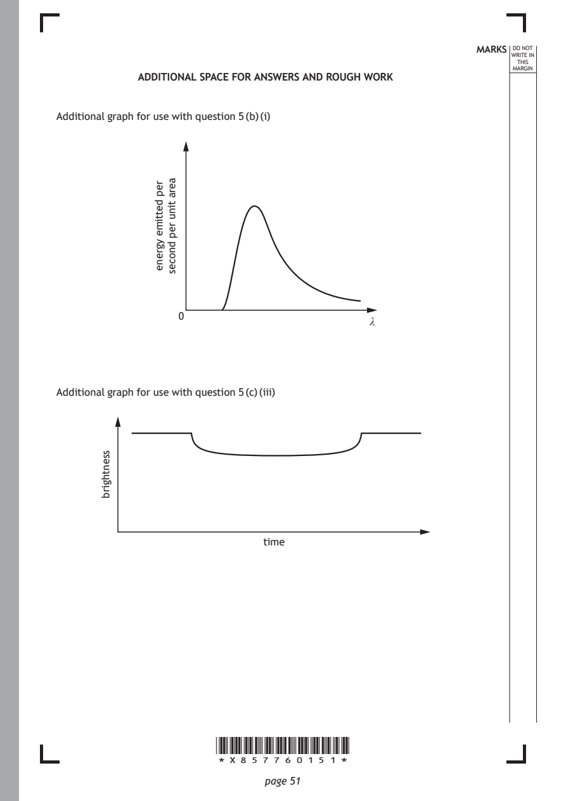
Selectable page text
MARKS _{W}^{D}_{R}^{O}_{I} _{T}^{N}OT
E IN
THIS
MARGIN
ADDITIONAL SPACE FOR ANSWERS AND ROUGH WORK
Additional graph for use with question 5 (b) (i)
0
*X857760151*
page 51
rep
dettime
ygrene
aera
tinu
rep
dnoces
λ
Additional graph for use with question 5 (c) (iii)
ssenthgirb
timePDF page 52
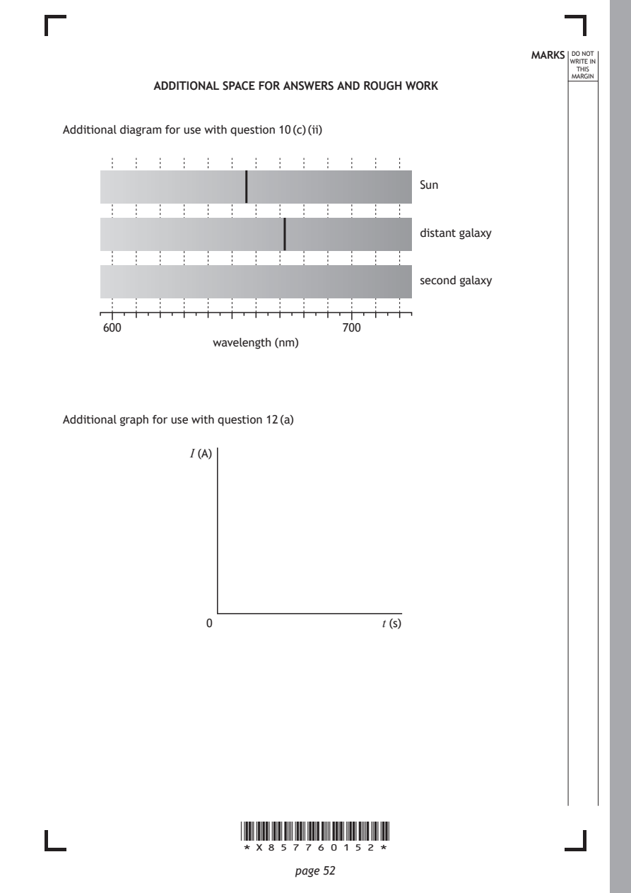
Selectable page text
MARKS _{W}^{D}_{R}^{O}_{I} _{T}^{N}OT
E IN
THIS
MARGIN
ADDITIONAL SPACE FOR ANSWERS AND ROUGH WORK
Additional diagram for use with question 10 (c) (ii)
Sun
distant galaxy
second galaxy
600 700
wavelength (nm)
Additional graph for use with question 12 (a)
I (A)
0 t (s)
*X857760152*
page 52PDF page 53
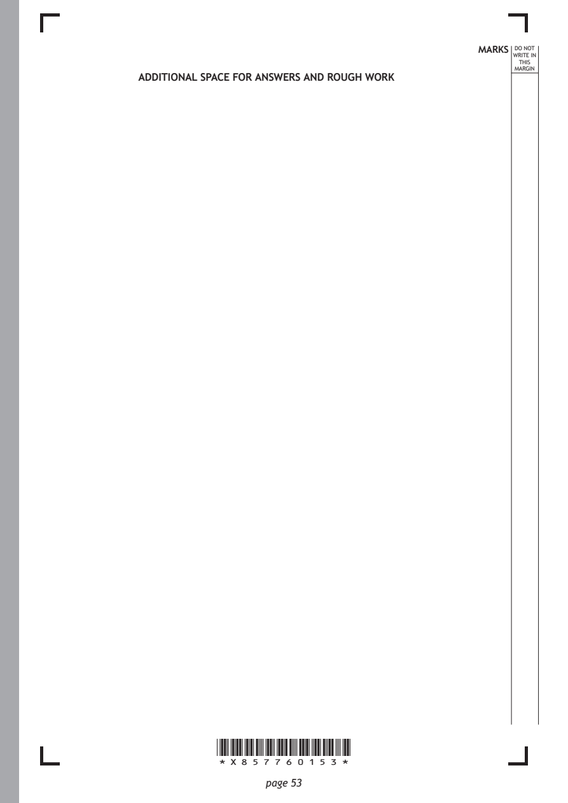
Selectable page text
MARKS _{W}^{D}_{R}^{O}_{I} _{T}^{N}OT
E IN
THIS
MARGIN
ADDITIONAL SPACE FOR ANSWERS AND ROUGH WORK
*X857760153*
page 53PDF page 54
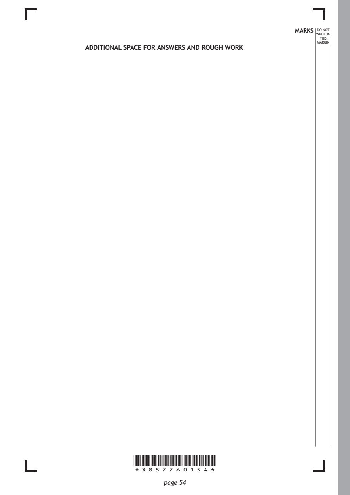
Selectable page text
MARKS _{W}^{D}_{R}^{O}_{I} _{T}^{N}OT
E IN
THIS
MARGIN
ADDITIONAL SPACE FOR ANSWERS AND ROUGH WORK
*X857760154*
page 54PDF page 55
Selectable page text
[BLANK PAGE]
DO NOT WRITE ON THIS PAGE
*X857760155*
page 55PDF page 56
Selectable page text
[BLANK PAGE]
DO NOT WRITE ON THIS PAGE
*X857760156*
page 56